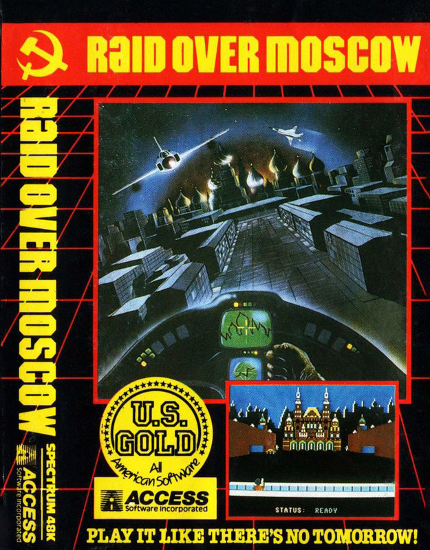
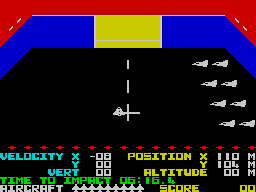
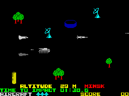

Raid Over Moscow


{kind=link}

| Publisher: | US Gold Ltd |
| Price: | £7.95 |
| Year: | 1985 |
| Source: | CRASH, Issue 15 |

‘Play it like there was no Tomorrow!’ exclaims the cover of this rather grim scenario. Raid Over Moscow contains seven sections which take you, as a Squadron Leader of an attack flight based on a US space station on a virtual suicide mission to knock out the Soviet missile launch sites and then proceed to Moscow armed only with the weapons you can carry to destroy the Soviet defence centre.
Much of the game is linked by the Sequence 1 screen, a view of the northern hemisphere showing the States and the USSR. Here you can see missiles being launched. Pressing fire takes you into Sequence 2 — inside the space station. In this sequence you must launch your fighter craft under almost zero gravity, using reverse thrust to slow down, and guide them out of the hangar doors into space (Sequence 1 screen). If you decide to attack the Soviet launch silo, you can guide your fighter down into Soviet airspace — Sequence 3.

station, two parked fighters and
one descending.
The attack run resembles Zaxxon, except that it is horizontal scrolling instead of three-quarters. You must fly low, using your shadow to assess height and angle, avoid trees. If you fly too high then radar will pick you up and Soviet heat-seeking missiles will attack from behind. But in being low you risk being hit by the ground defences. You can fire forwards to destroy ground targets and missiles. If you get through to the silos the scene cuts to....
Sequence 4. Here you are the bottom of the screen firing forwards at the five silos. The idea is to fire through the small windows, while avoiding the Soviet fighters firing back. Destroying the central command silo will prevent the launched missiles reaching their target and let you continue on to Moscow.
Sequence 5 sees one of your men in a trench outside the Soviet defence centre (looks like the Kremlin). Targets include soldiers, tanks, towers and doors, one of which is the entrance to the reactor to be blown up in the last main sequence. Your man can fire his rocket launcher at targets while you guide fire by watching the trajectory. The reactor door is randomly selected, and once it and all the other targets have been destroyed you proceed to....

fighting your way to Moscow.
Sequence 6. Inside the reactor room there is a maintenance robot keeping the fuel cells cool — put him off his stroke and the reactor may overheat and detonate. As you cannot enter the maintenance area you must bounce disc grenades off the walls aided by a laser scope. A robot will require four hits to destroy it.
The final scene is a congratulatory one which lets you know if you have accomplished your mission.
The screen displays are varied, but below the playing area are all the necessary telltales, lives and, most importantly, time to impact of a Soviet missile fired at the States. Should this get through before you destroy the central command silo, the game will end.
CRITICISM
‘I had rather mixed feelings for Raid Over Moscow. On one hand it’s a multi-stage attack game, but on the other it is a series of very simple arcade shoot em up scenarios. The graphics were okay but not really fantastic. I had speculated that the game was going to be great, but it was not. Good, yes, but shoot em ups with slightly different scenes are not ultra-brill. More exciting graphics and a little more content in each stage would have made all the difference between good and great. Overall I was a little disappointed.’
‘This game is rather unusual because it’s really six different games in one, rather like Beach-Head. Each stage does require a little arcade skill in the first few, but considerably more as the game progresses. The third stage where you have to fly your craft through the enemy’s defences of various towns is rather like Zaxxon, in fact I’d go as far as to say that this stage is the best ‘Zaxxon’ type game for the Spectrum, which could well be a selling point to the game. The landscape scrolls very smoothly and is exceptionally detailed. This stage is action-packed with fast-moving graphics — plenty to keep your mind occupied. Moving onto the Moscow screen, you fight through a long succession of enemy land craft which constantly fire at you, where at the end you arrive at the defence centre. Destroying the centre is extremely difficult when you’re being bombarded by tanks and soldiers from all angles. The defence centre is large, well drawn and very colourful, also it disintegrates very nicely as your rockets explode on it. I must say that I enjoyed this game immensely, although the first few sequences become a bit trivial after a while if not irritating. Throughout the game there is constant sound and beautiful, very realistic explosions. Everything is well drawn and the 3D perspective is wonderful. A worthwhile addition to your collection if you feel up to playing this exceptionally difficult game.’
‘Like Beach-Head, Raid Over Moscow offers good value in that there are several different types of shoot em up in one, including some excellent ‘Zaxxon’ type sequences. Arcade skills are required to survive, as well as some simple elements of strategical thinking. The bombardment of the defence centre is a sort of very souped up version of the old DK’Tronics’ 3D Tanx and it works really well — a hard little sequence. Graphically this game is accomplished, using large characters and smooth scrolling, all very clear and bright. I found Raid Over Moscow absorbing, addictive and fun to play. Recommended.’
COMMENTS
| Control keys: | I/P left/right, Q/Z up/down, N to fire — these are preset but they are also user-definable |
| Joystick: | Kempston, Sinclair 2, Cursor type |
| Keyboard play: | Very responsive |
| Use of colour: | Excellent |
| Graphics: | Excellent, large, smooth, detailed and varied |
| Sound: | Continuous with spot effects |
| Skill levels: | 3, easy to hard |
| Lives: | 9 fighters, but depends on stopping missiles |
| Screens: | 7 |
| General rating: | Very good to excellent, mixed feelings on content, but two reviewers thought there was plenty. |
| Use of Computer: | 90% |
| Graphics: | 86% |
| Playability: | 89% |
| Getting Started: | 96% |
| Addictiveness: | 85% |
| Value For Money: | 86% |
| Overall: | 92% |